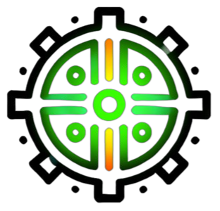

Periodos
Plan de Estudios
Carta de Asignación
Grupos
Docentes
Carga
Tutoría
Reportes
Proyectos Integradores
Horarios
Prefectura

Sistema de Carga Académica v1.0
Prefectura
Horarios
Periodo:
Seleccione un periodo creado
üîç
❌
Cerrar
← Volver a Inicio